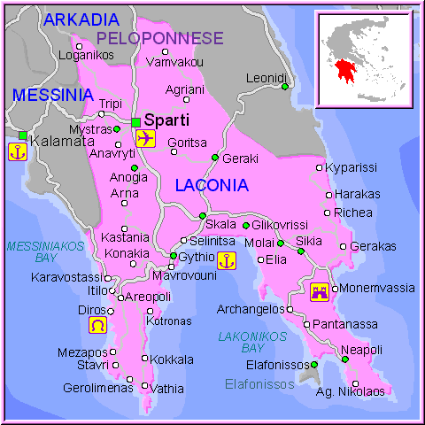
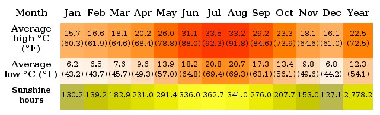
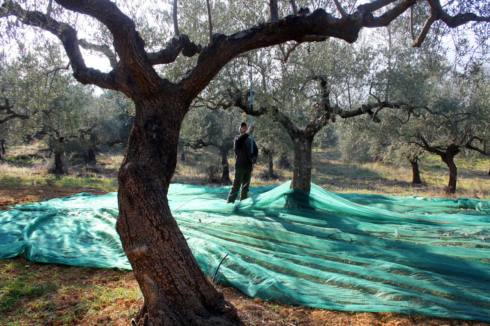
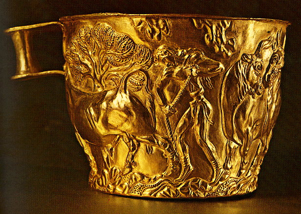

Laconia Map source
GEOGPAPHY
Laconia borders on Messenia to the west and Arcadia to the north. Laconia is surrounded by the Myrtoan Sea to the east and the Laconian
Gulf and the Mediterranean Sea to the south. It encompasses Cape Malea and Cape Tainaron and a large part of the Mani Peninsula.
The islands of Kythira and Antikythera lie to the south, but they administratively belong to the regional unit of Islands. The
island Elafonisos, situated between the Laconian mainland and Kythira, is part of Laconia.
The Evrotas is the longest
river in the prefecture. The valley of the Evrotas is predominantly an agricultural region that contains many citrus
groves, olive groves and pasture lands. It is the location of the largest orange production in the Peloponnese and probably
all of Greece. The brand of orange juice named after this prefecture Lakonia is based in Amykles.
The main
mountain ranges are the Taygetus (2,407 m) in the west and the Parnon (1,961 m) in the northeast. Taygetus, known as
Pentadaktylos (five-fingers) throughout the Middle Ages, is west of Sparta and the Evrotas valley. It is the highest
mountain in Laconia and the Peloponnese, and mostly covered with pine trees.
CLIMATE
Laconia
has a Mediterranean climate with warm winters and hot summers.
Snow is rare on the coast throughout the winter, but very common
in the mountains.


Olive collection source
ECONOMY
The economy of
Laconia is mainly rural. In the lowlands, agricultural production
is concentrated on olive oil and citrus.. In the mountainous
parts the main economic factor is farming, mainly that of dairy
animals and poultry. In the prefecture small industrial
enterprises processing agricultural products and manufacture
juices are operated. Fishing, although highly developed in the
Laconian Gulf, covers only the needs of the region.
Another economic resource of Laconia is internal and outdoor
tourism. Rich and various natural and historical attractions of
the area (Mani, Mystras, Monemvasia, Sparta, etc) attract many
Greek and foreign visitors every year.

The Vapheio cups source
HISTORY
In ancient
Greece this was the principal region of the Spartan state.
Throughout classical antiquity the Spartan sphere of influence
expanded to Messenia, whose inhabitants (the helots) were
permanently enslaved. Significant archaeological recovery exists
at the Vaphio tomb site in Laconia. Advanced Bronze Age art is
found here and evidence of cultural associations with the
co-temperaneous Minoan culture on Crete. Laconia was at war with
the Kingdom of Macedonia and saw several battles; at the end of
the Mycenean period population of Laconia declined sharply. From
the early-2nd century BC until 395 it became a part of the Roman
Empire.
In the medieval period, it formed part of the
Byzantine Empire and following the Crusades it was the home of
the Byzantine Despotate of Morea, held by the penultimate Greek
ruling dynasty, the Palaiologoi. Laconia fell into the hands of
the Ottomans but the Mani peninsula was mainly autonomous.
Laconia was liberated after the Greek War of Independence of
1821 and after victory in battle, Sparta was selected capital
of the modern prefecture; its economy and agriculture expanded.
The country and the prefecture extended beyond the Laconia of
ancient times, to Elafonissos in 1864, separating it from the
British Empire and dissolving United States of the Ionian
Islands. The island never had full Turkish rule; it was part of
the Venetian Empire from the 15th century until the Napoleonic
Wars. After World War II and the Greek Civil War, its
population began to decline somewhat, as people moved from the
villages toward the larger cities of Greece and abroad.